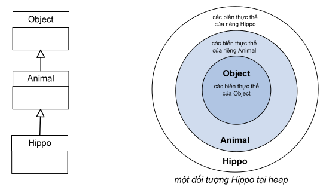
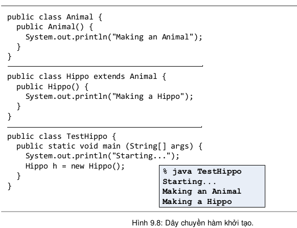

Nhớ lại Mục 8.6 khi ta nói về cấu trúc bên trong của lớp con có chứa phần được thừa kế từ lớp cha, lớp Cow bọc ra ngoài cái lõi là phần Object mà nó được thừa kế. Nói cách khác, mỗi đối tượng lớp con không chỉ chứa các biến thực thể của chính nó mà còn chứa mọi thứ được hưởng từ lớp cha của nó. Mục này nói về việc khởi tạo phần được thừa kế đó.
Khi một đối tượng được tạo, nó được cấp phát bộ nhớ cho tất cả các biến thực thể của chính nó cũng như những thứ nó được thừa kế từ lớp cha, lớp ông, lớp cụ... cho đến lớp Object trên đỉnh cây thừa kế.
Tất cả các hàm khởi tạo trên trục thừa kế của một đối tượng đều phải được thực thi khi ta tạo mới đối tượng đó. Mỗi lớp tổ tiên của một lớp con, kể cả các lớp trừu tượng, đều có hàm khởi tạo. Tất cả các hàm khởi tạo đó được kích hoạt lần lượt mỗi khi một đối tượng của lớp con được tạo.
Lấy ví dụ Hippo trong cây thừa kế Animal. Một đối tượng Hippo mới chứa trong nó phần Animal, phần Animal đó lại chứa trong nó phần Object. Nếu ta muốn tạo một đối tượng Hippo, ta cũng phải khởi tạo phần Animal của đối tượng Hippo đó để nó có thể sử dụng được những gì được thừa kế từ Animal. Tương tự, để tạo phần Animal đó, ta cũng phải tạo phần Object chứa trong đó.
Khi một hàm khởi tạo chạy, nó lập tức gọi hàm khởi tạo của lớp cha. Khi hàm khởi tạo của lớp cha chạy, nó lập tức gọi hàm khởi tạo của lớp ông,... cứ như thế cho đến khi gặp hàm khởi tạo của Object. Quy trình đó được gọi là dây chuyền hàm khởi tạo (Constructor Chaining).
Ta minh họa dây chuyền hàm khởi tạo bằng ví dụ trong Hình 9.8. Trong ví dụ đó, mã chương trình TestHippo gọi lệnh new Hippo() để tạo đối tượng Hippo mới, lệnh này khởi động một dây chuyền hàm khởi tạo. Đầu tiên là Hippo() được kích hoạt, Hippo() gọi hàm khởi tạo của lớp cha – Animal(), đến lượt nó, Animal() gọi hàm khởi tạo của lớp ông,... cứ như thế cho đến khi gặp hàm khởi tạo của Object(). Sau khi Object() chạy xong, hoàn thành khởi tạo phần Object trong đối tượng Hippo, nó kết thúc và trả quyền điều khiển về cho nơi gọi nó – hàm khởi tạo Animal(). Hàm khởi tạo Animal() khởi tạo xong phần Animal của đối tượng Hippo rồi kết thúc, trả quyền điều khiển về cho nơi gọi nó – hàm khởi tạo Hippo(). Hippo() thực hiện công việc của mình rồi kết thúc. Đối tượng Hippo mới đã được khởi tạo xong.
Lưu ý rằng một hàm khởi tạo gọi hàm khởi tạo kia, nhưng trong Hình 9.8 hoàn toàn không có lệnh gọi Animal() từ trong mã của Hippo(), không có lệnh gọi Object() từ trong mã của Animal(). Một lần nữa, trình biên dịch đã làm công việc này thay cho lập trình viên, nó tự động điền lệnh super() vào ngay trước dòng đầu tiên của thân hàm khởi tạo. Việc này xảy ra đối với mỗi hàm khởi tạo mà tại đó lập trình viên không tự viết lời gọi đến hàm khởi tạo lớp cha. Còn đối với những hàm khởi tạo mà lập trình viên tự gọi super, lời gọi đó cũng phải là lệnh đầu tiên trong thân hàm.
Tại sao lời gọi super() phải là lệnh đầu tiên tại mỗi hàm khởi tạo? Đối tượng thuộc lớp con có thể phụ thuộc vào những gì nó được thừa kế từ lớp cha, do đó những gì được thừa kế nên được khởi tạo trước. Các phần thừa kế từ lớp cha phải được xây dựng hoàn chỉnh trước khi có thể xây dựng những phần của lớp con.
Lưu ý rằng cách duy nhất để gọi hàm khởi tạo lớp cha từ trong hàm khởi tạo lớp con là lệnh super() chứ không gọi đích danh tên hàm như Animal() hay Object().
Lệnh gọi hàm khởi tạo lớp cha mà trình biên dịch sử dụng bao giờ cũng là super() không có đối số. Nhưng nếu ta tự gọi thì có thể dùng super() với đối số để gọi một hàm khởi tạo cụ thể trong các hàm khởi tạo chồng nhau của lớp cha.
Ta hình dung tình huống sau: con vật nào cũng có một cái tên, nên đối tượng Animal có biến thực thể name. Lớp Animal có một phương thức getName(), nó trả về giá trị của biến thực thể name. Biến thực thể đó được đánh dấu private, nhưng lớp con Hippo thừa kế phương thức getName(). Vấn đề ở đây là Hippo có phương thức getName() qua thừa kế, nhưng lại không có biến thực thể name. Hippo phải nhờ phần Animal của nó giữ biến name và trả về giá trị của name khi ai đó gọi getName() từ một đối tượng Hippo. Vậy khi một đối tượng Hippo được tạo, nó làm cách nào để gửi cho phần Animal giá trị cần khởi tạo cho name? Câu trả lời là: dùng giá trị đó làm đối số khi gọi hàm khởi tạo của Animal.
Ta thấy thân hàm Hippo(String name) trong ví dụ Hình 9.9 không làm gì ngoài việc gọi phương thức khởi tạo của lớp cha với danh sách tham số giống hệt. Có thể có người đọc thắc mắc vì sao phải viết hàm khởi tạo lớp con với nội dung chỉ như vậy. Trong khi nếu lớp con thừa kế lớp cha thì lớp con không cần cài lại cũng nghiễm nhiên được sử dụng phiên bản được thừa kế của lớp cha với danh sách tham số giống hệt, việc viết phương thức cài đè tại lớp con với nội dung chỉ gồm lời gọi tới phiên bản được thừa kế tại lớp cha là không cần thiết. Thực ra, tuy cùng là các phương thức khởi tạo và có cùng danh sách tham số, nhưng phương thức Hippo(String name) và Animal(String name) khác tên. Hippo(String name) không cài đè Animal(String name). Tóm lại, lớp con không thừa kế phương thức khởi tạo của lớp cha.